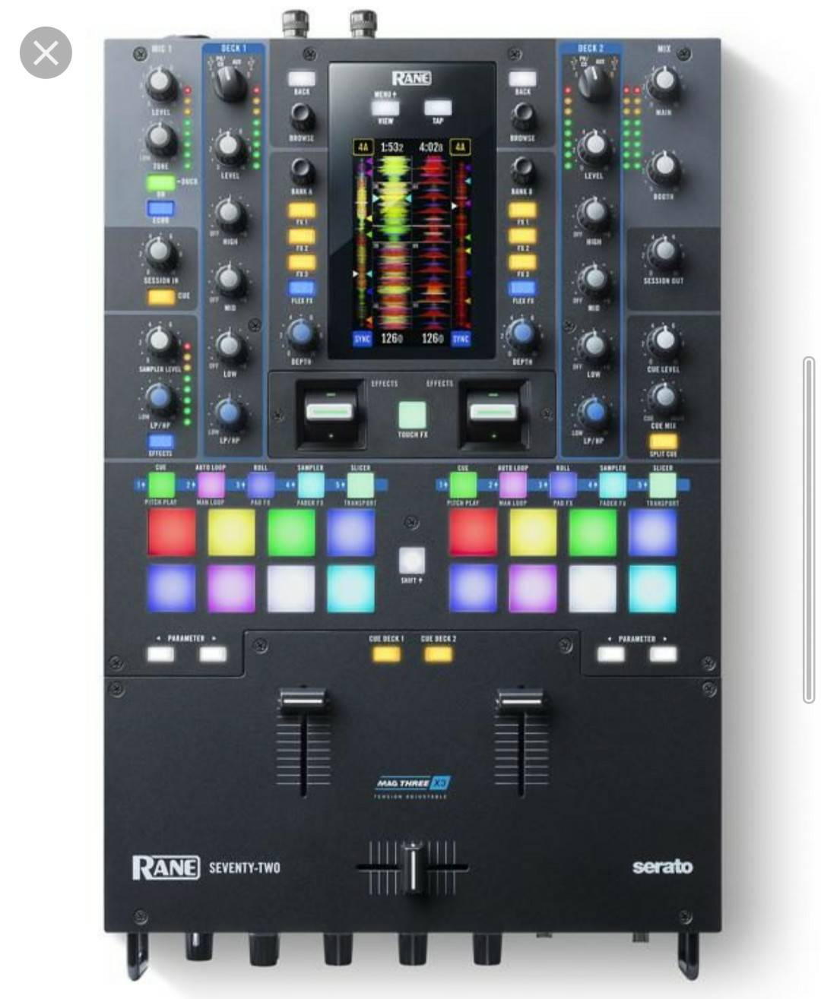
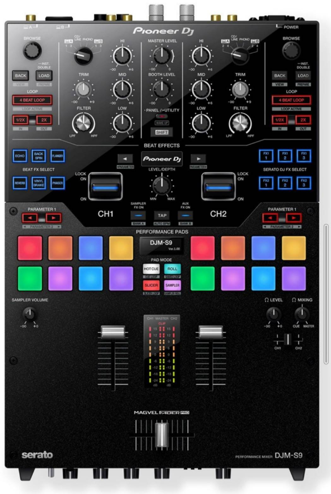
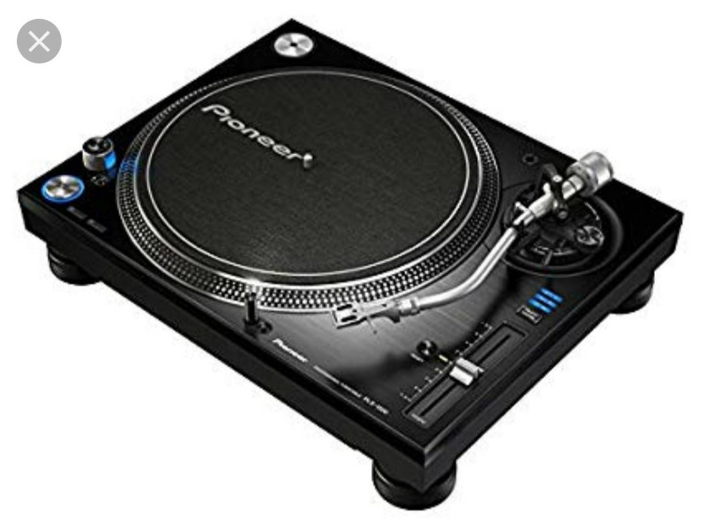
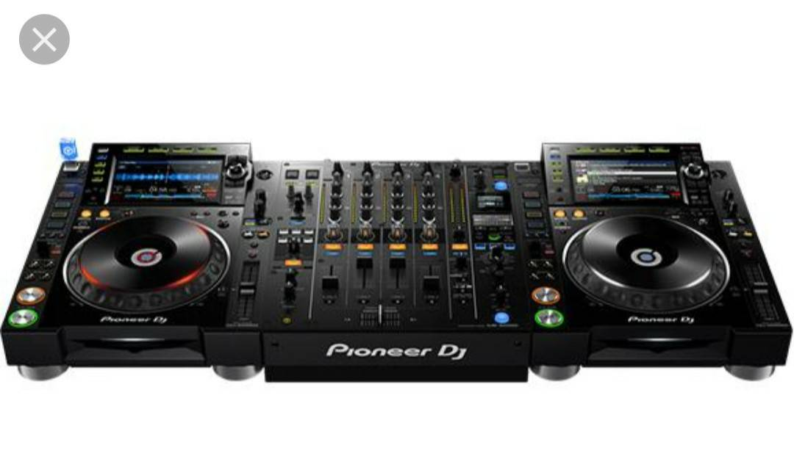
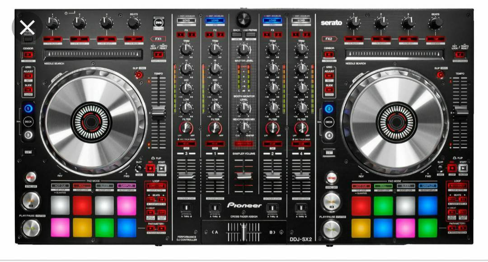

硬體介紹
現在你有軟體也有自己的音樂，我們就要來看看如何找尋適合自己的硬體。 適合自己的硬體對dj非常重要，首先你要先問問自己是比較傾向朝刷碟的方向還是傾向順順的接歌，這兩個方向會有兩個完全不同的硬體規劃，如果你今天是要刷碟的，那會建議你買一組唱盤與一個雙軌的mixer，目前市面上最多人使用的會是rane72與pioneer djm s9 唱盤的話則是建議plx 1000
那如果你是傾向順順的放歌，那我就會建議使用cdj或ddj，因為能夠獲得更穩定的輸出,cdj的話推薦pioneer cdj2000 nxs2搭配djm 900 nxs2 ； ddj的話則推薦pioneer sx2
Rane72
Djm s9

Plx1000
Cdj整套

Ddj pioneer sx2

以上都只是推薦與，還是建議大家如果可以話找到離你們最近的實體店面實際操作看看再下決定會是最好的哦～
這裡再提供一個網站給大家參考，他可以網購也有實體店面，裡面也介紹的很詳細
馬特D J器材專賣店


聯絡我們